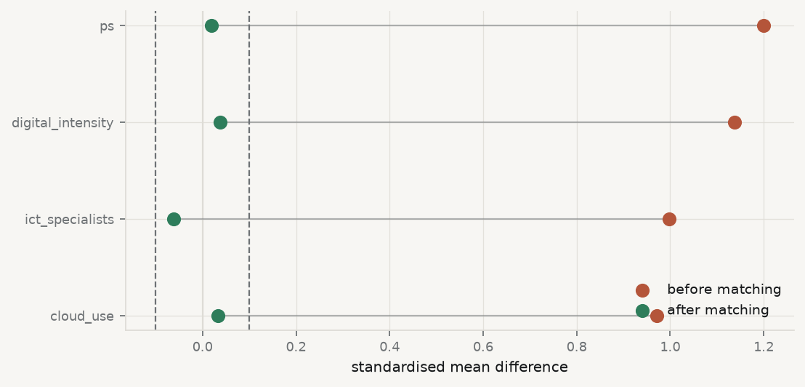

10.1 The question the first nine chapters could not answer
Every method so far has described an association and then, carefully, declined to call it an effect. Chapter 2 insisted on “associated with” rather than “causes”. Chapter 6 showed the same association taking four different values depending on which variation identified it. Chapter 9 produced two models with identical fit and opposite causal arrows.
The reason for all that caution is that the question — did the policy do anything? — is not a question about the data you have. It is a question about data you do not have and cannot get.
David Hume · 1711–1776
Asked what entitles us to say one thing causes another, and did not find a satisfying answer. Neither has anyone since.
Allan Ramsay, 1766. Public domain, via Wikimedia Commons.
From the archive · Hume, 1739
David Hume asked what we actually observe when we say one thing causes another, and answered: contiguity, succession, and constant conjunction. The billiard ball moves; another moves after it; this has always happened. What we never observe is the necessary connection — the thing that would make the second event have to follow.
His second formulation is the one that founded modern causal inference, though it took two centuries to be taken up. A cause, he wrote, is an object followed by another, and where, if the first object had not been, the second never had existed. That subordinate clause is a counterfactual: a statement about a world that did not happen. It cannot be observed, in principle, for the same reason a road not taken has no destination.
Hume treated this as a sceptical problem about knowledge. Modern statistics treats it as a missing data problem, which turns out to be the more productive framing — because missing data can sometimes be recovered, under assumptions you can state, defend and occasionally test.
10.2 Potential outcomes
The framework that formalises Hume’s clause is due to Neyman and, in its modern form, to Rubin (Rubin 1974). For each unit \(i\) define two quantities:
\[
Y_i(1) = \text{the outcome if unit } i \text{ is treated},
\qquad
Y_i(0) = \text{the outcome if it is not}.
\]
Both are properties of the unit, defined whether or not the treatment happens. The causal effect for that unit is the difference
\[
\tau_i \;=\; Y_i(1) - Y_i(0),
\]
and it is exactly what Hume said we cannot observe: whichever treatment the unit receives, the other potential outcome is missing, permanently and by construction. This is the fundamental problem of causal inference(Holland 1986), and it means that no individual causal effect is ever identified. What we can hope for is an average.
ATE — average treatment effect, \(\operatorname{E}[Y(1) - Y(0)]\) over the whole population. What would happen if everyone were treated versus no one.
ATT — average treatment effect on the treated, \(\operatorname{E}[Y(1) - Y(0) \mid T = 1]\). What the treatment did for those who actually received it. Usually the policy-relevant quantity, and usually not equal to the ATE.
Now the arithmetic that explains why naive comparisons fail. What you can compute from data is the difference in observed means. Add and subtract the same term:
The second term is the difference between the treated and untreated groups in the absence of treatment. If countries that adopt a policy would have differed from those that did not even without it, the observed difference is the effect plus that gap, and nothing in the data separates them.
10.3 Randomisation, and what it buys
Randomised assignment sets the selection term to zero, and it is worth being precise about why. If treatment is assigned by a coin flip, then \(T\) is independent of everything about the unit — including \(Y(0)\) and \(Y(1)\) — so \(\operatorname{E}[Y(0) \mid T{=}1] = \operatorname{E}[Y(0) \mid T{=}0]\) and the bias term vanishes.
Note what randomisation does not do. It does not make the groups identical; in any finite sample they will differ, sometimes substantially. It makes them differ in a way unrelated to the outcome, so the difference is noise rather than bias — and noise is what standard errors are for. It also balances variables nobody measured or thought of, which is the property no observational method can replicate.
When randomisation is unavailable, and in international business it usually is — countries are not randomly assigned national strategies — the alternative is to assume something strong enough to recover the same result.
Conditional independence (unconfoundedness, ignorability) — given a set of covariates \(X\), treatment is as good as random: \(\{Y(0), Y(1)\} \perp T \mid X\). Every determinant of both treatment and outcome is in \(X\). This assumption is not testable, because it concerns the missing potential outcome.
Overlap (common support) — for every value of \(X\), the probability of treatment is strictly between 0 and 1. If some countries would never adopt under any circumstances, there is no comparison to be made for them, and an estimate that includes them is extrapolating rather than comparing. Unlike conditional independence, overlap is checkable.
10.4 A treatment with a known answer
Everything above is standard and abstract. What follows is not available in real work: an evaluation where the true effect is known, so each method can be marked rather than argued about.
The course fixture contains a national AI strategy, adopted by some countries in 2021, 2022 or 2023 and never by others. The generator that built it did three things deliberately. It assigned treatment as a function of two baseline country characteristics — development and institutional capacity — so the data are confounded by construction. It set the true effect at +2.4 percentage points on AI use. And it kept the infrastructure indicators free of any treatment effect, so they are legitimate pre-treatment controls, while the adoption indicators are downstream of treatment and are not.
Run it: the treatment, and how it was assigned
import sys, warningssys.path.insert(0, "../slides"); sys.path.insert(0, "..")warnings.filterwarnings("ignore")from plotstyle import setup, CLplt = setup()import numpy as np, pandas as pd, statsmodels.api as sm, qmibY, T ="ai_use_any", "has_ai_strategy"PRE = ["cloud_use", "ict_specialists", "digital_intensity"]TRUE_EFFECT =2.4# from scripts/build_spine/make_fixtures.pypanel = qmib.load("angle_c_country").dropna( subset=[Y, T, "ai_use_ml"] + PRE).copy()print(f"country-years: {len(panel)} treated: {int(panel[T].sum())} "f"years {panel.time.min()}–{panel.time.max()}")print(f"\nadopting countries differ before treatment — standardised differences:")for c in PRE: a, b = panel.loc[panel[T] ==1, c], panel.loc[panel[T] ==0, c] smd = (a.mean() - b.mean()) / np.sqrt((a.var(ddof=1) + b.var(ddof=1)) /2)print(f" {c:22}{smd:+7.3f}")print("\nA standardised difference near 1 is a large imbalance. These countries")print("were already more digital before any strategy existed — which is exactly")print("the selection term in the decomposition above.")
country-years: 91 treated: 49 years 2021–2024
adopting countries differ before treatment — standardised differences:
cloud_use +0.972
ict_specialists +0.998
digital_intensity +1.138
A standardised difference near 1 is a large imbalance. These countries
were already more digital before any strategy existed — which is exactly
the selection term in the decomposition above.
10.5 Four estimates, one truth
Run it: score the estimators against the known effect
def report(label, estimate, se=None): tail =f" (SE {se:.3f})"if se isnotNoneelse""print(f"{label:38}{estimate:+8.3f}{estimate - TRUE_EFFECT:+10.3f}{tail}")print(f"{'method':38}{'estimate':>8}{'bias':>10}")report("the truth (from the generator)", TRUE_EFFECT)naive = panel.loc[panel[T] ==1, Y].mean() - panel.loc[panel[T] ==0, Y].mean()report("naive difference in means", naive)adj = sm.OLS(panel[Y], sm.add_constant(panel[[T] + PRE])).fit( cov_type="cluster", cov_kwds={"groups": panel["geo"]})report("regression on pre-treatment controls", adj.params[T], adj.bse[T])# 1:1 nearest-neighbour matching on the estimated propensity scoreps = sm.Logit(panel[T], sm.add_constant(panel[PRE])).fit(disp=0).predict()panel = panel.assign(ps=ps)tr, co = panel[panel[T] ==1], panel[panel[T] ==0]nn = np.abs(tr["ps"].values[:, None] - co["ps"].values[None, :]).argmin(axis=1)matched = co.iloc[nn]report("propensity-score matching (ATT)", (tr[Y].values - matched[Y].values).mean())bad = sm.OLS(panel[Y], sm.add_constant(panel[[T] + PRE + ["ai_use_ml"]])).fit( cov_type="cluster", cov_kwds={"groups": panel["geo"]})report("+ a post-treatment control", bad.params[T], bad.bse[T])
method estimate bias
the truth (from the generator) +2.400 +0.000
naive difference in means +6.069 +3.669
regression on pre-treatment controls +3.101 +0.701 (SE 0.365)
propensity-score matching (ATT) +2.678 +0.278
+ a post-treatment control +2.153 -0.247 (SE 0.433)
The naive comparison overstates the effect by more than 150%. That is the selection term made visible: adopting countries were already more digital, and the difference in outcomes is mostly the difference in countries.
Adjusting for the pre-treatment indicators removes most of it but not all, leaving about +0.7 percentage points of bias. The reason is worth stating, because it is the normal situation and not a defect of this example: the observed indicators are noisy proxies for the latent characteristics that actually drove adoption. Conditioning on a proxy removes the part of the confounding it captures and leaves the rest.
Matching does best. And the last line is the interesting one.
10.6 The control that improves the number and ruins the estimate
Adding a post-treatment variable moved the estimate closer to the truth. It is still wrong to do it, and understanding why is more valuable than the number.
ai_use_ml is a consequence of the strategy, not a cause of it. Conditioning on it blocks part of the causal path from treatment to outcome, so the coefficient on treatment no longer measures the total effect — it measures whatever is left after the mediated portion has been removed. That it lands near the truth here is a coincidence: the downward bias from blocking the path happened to offset the residual upward bias from imperfect proxies.
“Closer to the right answer” is not the same as “the right method.” In real work the truth is unknown, so the only evidence available is whether the procedure is justified. A procedure that is wrong for a reason you can state will be wrong by an unknown amount in the next dataset, and no diagnostic will announce it.
This is the general problem of bad controls. The instinct that adding covariates is prudent is wrong in two specific cases: a mediator, which sits on the causal path and whose inclusion removes part of the effect you are estimating; and a collider, a common consequence of treatment and outcome, whose inclusion creates an association that does not exist (Elwert and Winship 2014). Deciding what belongs in the regression is a claim about causal structure, not a statistical choice, and Cinelli, Forney, and Pearl (2022) is the short guide worth keeping beside the keyboard.
10.7 Balance is the diagnostic, not fit
The most important shift in this chapter is what counts as evidence that the estimate is any good. Chapter 3 judged a model by its residuals. A matching estimator is judged by whether the groups it compares are actually comparable.
Show the code
def smd(a, b):return (a.mean() - b.mean()) / np.sqrt((a.var(ddof=1) + b.var(ddof=1)) /2)names = PRE + ["ps"]before = [smd(tr[c], co[c]) for c in names]after = [smd(tr[c], matched[c]) for c in names]fig, ax = plt.subplots(figsize=(7.0, 3.4))yy = np.arange(len(names))ax.axvline(0, color=CL.line, lw=1)for x in (-0.1, 0.1): ax.axvline(x, color=CL.muted, lw=1, ls="--")ax.scatter(before, yy, s=58, color=CL.warn, label="before matching", zorder=3)ax.scatter(after, yy, s=58, color=CL.good, label="after matching", zorder=3)for i, (b_, a_) inenumerate(zip(before, after)): ax.plot([b_, a_], [i, i], color=CL.muted, lw=1, alpha=0.5, zorder=2)ax.set_yticks(yy); ax.set_yticklabels(names)ax.set_xlabel("standardised mean difference")ax.legend(frameon=False, fontsize=8.5, loc="lower right")fig.tight_layout()print(f"{'covariate':22}{'before':>9}{'after':>9}")for n, b_, a_ inzip(names, before, after):print(f"{n:22}{b_:+9.3f}{a_:+9.3f}")print(f"\noverlap in the propensity score:")print(f" treated {tr['ps'].min():.3f} – {tr['ps'].max():.3f}")print(f" control {co['ps'].min():.3f} – {co['ps'].max():.3f}")
covariate before after
cloud_use +0.972 +0.033
ict_specialists +0.998 -0.061
digital_intensity +1.138 +0.037
ps +1.200 +0.019
overlap in the propensity score:
treated 0.245 – 0.970
control 0.051 – 0.931

Figure 10.1: Covariate balance before and after matching. Each point is the standardised difference between treated and control groups; the dashed lines mark the conventional 0.1 threshold. Before matching every covariate is imbalanced by around one standard deviation; after, all lie inside the threshold.
The convention is that a standardised difference below 0.1 is acceptable balance. Before matching, every covariate is out by around a full standard deviation; after, all four sit inside the threshold. That is the result to report — not the R² of the propensity model, which is irrelevant, and not its coefficients, which are a means and not an end.
The overlap figures matter too. The treated propensity scores span a range the controls also cover, so every treated unit has a plausible comparison. Had the treated run from 0.9 to 1.0 while controls stopped at 0.4, there would be no comparable units and the honest response is to restrict the sample and say the estimate applies only to the region where comparison was possible.
One caution about the method itself. Propensity-score matching is the most popular approach here and not the best one: matching on a scalar score discards information and can increase imbalance as the caliper tightens, a pathology documented at length by King and Nielsen (2019). Matching directly on the covariates, or weighting rather than matching, generally does better. The score remains a good diagnostic for overlap even where it is a poor matching device.
10.8 What none of this fixes
The estimate above came within 0.3 percentage points of the truth. It would be a mistake to conclude that matching solved the problem, because the assumption that licensed it was true by construction — the generator used exactly those covariates to assign treatment, so conditioning on them is sufficient.
In real work you never know that. Conditional independence is untestable, and the honest response is to ask how wrong it could be. Sensitivity analysis asks: how strong would an unobserved confounder have to be — how strongly associated with both treatment and outcome — to overturn the conclusion? If the answer is “about as strong as the covariates already controlled for”, the finding is fragile. If it is “stronger than any known determinant”, it is robust. Either way the reader learns something a point estimate does not tell them.
The deeper limitation is that matching and regression adjustment are the same assumption in different clothing. Both require that conditioning on observed covariates suffices. Neither creates identification; they only implement it. When the assumption fails, both fail, and they fail in the same direction.
Chapter 11 takes the other route: rather than assuming the confounders are all observed, it uses the structure of when treatment arrived — the staggered adoption in this very dataset — to difference the unobserved ones away.
10.9 A short review of the literature
The potential-outcomes notation is Rubin (1974), though the idea traces to Neyman’s 1923 work on agricultural experiments. Holland (1986) named the fundamental problem and drew the boundary the discipline still uses — “no causation without manipulation” — which remains contested and clarifying.
Rosenbaum and Rubin (1983) proved the result that made observational adjustment tractable: if treatment is unconfounded given a covariate vector, it is unconfounded given the scalar propensity score alone, so a many-dimensional matching problem collapses to one dimension. Imbens (2004) surveys the estimators that followed and Stuart (2010) is the practical review, covering matching, weighting and the diagnostics that should accompany them.
The corrective literature is as important as the constructive one. King and Nielsen (2019) argues that propensity-score matching specifically — as opposed to matching in general — often increases imbalance and should be replaced by methods that match on covariates directly. Elwert and Winship (2014) sets out endogenous selection bias, the family of errors created by conditioning on colliders, and Cinelli, Forney, and Pearl (2022) gives the compact treatment of which controls help and which do damage.
10.10 What to report
The estimand, named. ATE or ATT — they answer different questions and matching usually estimates the second.
The identifying assumption, in words. Which variables are claimed to close every path from treatment to outcome, and why that list is complete. This is an argument, not a table.
Balance before and after, for every covariate, with standardised differences. Not the propensity model’s coefficients or its fit.
Overlap, with the range of the score in both groups, and what you did about units outside common support.
The naive estimate alongside the adjusted one. The distance between them is the size of the selection problem, and hiding it hides the reason for the analysis.
A sensitivity analysis. How strong an unobserved confounder would need to be to overturn the result.
That every control is pre-treatment, and that you know it. If a covariate is measured after treatment, say why it is not a mediator or a collider — and if you cannot, drop it, even when it improves the number.
Cinelli, Carlos, Andrew Forney, and Judea Pearl. 2022. “A CrashCourse in Good and BadControls.”SociologicalMethods & Research 53 (3): 1071–1104. https://doi.org/10.1177/00491241221099552.
Elwert, Felix, and Christopher Winship. 2014. “EndogenousSelectionBias: TheProblem of Conditioning on a ColliderVariable.”AnnualReview of Sociology 40 (1): 31–53. https://doi.org/10.1146/annurev-soc-071913-043455.
Imbens, Guido W. 2004. “NonparametricEstimation of AverageTreatmentEffectsUnderExogeneity: A Review.”Review of Economics and Statistics 86 (1): 4–29. https://doi.org/10.1162/003465304323023651.
King, Gary, and Richard Nielsen. 2019. “WhyPropensityScoresShouldNotBeUsed for Matching.”PoliticalAnalysis 27 (4): 435–54. https://doi.org/10.1017/pan.2019.11.
Rosenbaum, PAUL R., and DONALD B. Rubin. 1983. “The Central Role of the Propensity Score in Observational Studies for Causal Effects.”Biometrika 70 (1): 41–55. https://doi.org/10.1093/biomet/70.1.41.
Rubin, Donald B. 1974. “Estimating Causal Effects of Treatments in Randomized and Nonrandomized Studies.”Journal of EducationalPsychology 66 (5): 688–701. https://doi.org/10.1037/h0037350.
Stuart, Elizabeth A. 2010. “MatchingMethods for CausalInference: A Review and a LookForward.”StatisticalScience 25 (1). https://doi.org/10.1214/09-STS313.